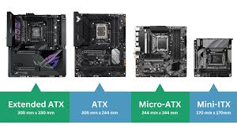

Computer cases and form factors refer to the size, shape, and layout of a computer's physical components. The case, also known as the chassis or tower, houses the internal hardware like the motherboard, power supply, and drives. Form factors determine the dimensions and arrangement of these components, with common types including ATX, Micro-ATX, and Mini-ITX. A larger case typically supports better airflow, more storage space, and powerful hardware, while smaller cases are more compact and suitable for limited spaces. Choosing the right form factor depends on your needs for performance, expandability, and space.
